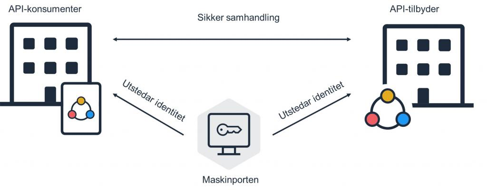

flowchart TD
A[API-tilbyder gir SSB tilgang til API via Samarbeidsportalen]
A --> B[M2M-teamet hos SSB oppretter Maskinporten-klienter]
B --> C[Keycloak-klienter for Maskinporten Guardian opprettes]
Maskinporten Guardian
Maskinporten
Maskinporten er en tjeneste fra Digdir som gir sikker autentisering og tilgangskontroll for datautveksling mellom virksomheter.
Tilgangsstyring for data administeres via et webgrensesnitt (Samarbeidsportalen) En virksomhet som deler data (API-tilbyder) definerer såkalte API scopes, og velger hvilke andre virksomheter (API-konsumenter) som skal ha tilgang til disse. API-konsumenter kan på sin side selv opprette en eller flere Maskinporten-klienter og gir de tilgang til API scopes som er delt med virksomheten.

Les mer om Maskinporten her.
Hva gjør Maskinporten Guardian?
Utveksling av data fra en API-tilbyder gjøres ved å inkludere et sikkerhetstoken som hentes fra Maskinporten på vegne av virksomheten man representerer (f. eks SSB). Hvilke data (API scopes) et sikkerhetstoken har tilgang til er knyttet til Maskinporten-klienten. For å hente et sikkerhetstoken for en klient, kreves det at man autentiserer seg som virksomhet. Dette gjøres ved å signere forespørsler til Maskinporten ved bruk av et virksomhetssertifikat. Det er her Maskinporten Guardian kommer inn i bildet.
Maskinporten Guardian har tilgang til SSBs virksomhetssertifikat og kan dermed signere forespørsler mot Maskinporten for å hente ut sikkerhetstokens.
Komme igang
Hvis en skal ta i bruk et API som er beskyttet av Maskinporten er det noen steg som må gjøres i forkant:
- API-tilbyderen må gi SSB tilgang til et API scope. API-tilbydere kan gjøre dette via Samarbeidsportalen hos Digdir. Fra API-tilbyderen får du også annen informasjon om API-ene, som:
- URL-er som skal benyttes for å snakke med API-et
- Navn på API scopes
- Om det finnes testadata
- Dokumentasjon for API-endepunktene
- Når data er delt av en API-tilbyder, og en har navnet på API scopes, kan M2M-teamet hos SSB kontaktes for å få opprettet Maskinporten-klienter, én pr miljø (f. eks
prodogtest). De må vite hvilke API scopes og miljøer (test/prod) som skal benyttes. M2M-teamet vil gi deg ID-er (f. eks12345678-9abc-def0-1234-567890abcdef) for klientene som er blitt opprettet.
Du kan anse ID for en Maskinporten-klient som et slags brukernavn, og behandle dette deretter. Slike ID-er er ikke sensitive i seg selv, men de bør allikevel ikke ligge i åpne git-repoer (SSB-private repoer er OK). Det er heller ingen grunn til å behandle disse som hemmeligheter. Det anbefales at man opererer med Maskinporten-klienter som ekstern konfigurasjon til koden, f. eks på samme måte som man behandler URL-er til API-ene.
- Når du har ID for Maskinporten-klienten(e), er neste steg å få opprettet en Keycloak-bruker for Maskinporten Guardian. Se Opprette en Maskinporten Guardian M2M-bruker. Ta kontakt med oss på Dapla via Pureservice dersom du trenger hjelp til dette. Client ID og client secret for Keycloak-brukeren kan hentes fra Secret Manager (mer om det lenger ned). Medlemmer av Dapla-teamet har tilgang til å hente disse.
Om noen på teamet trenger personlig tilgang til API-ene så må det konfigureres i Maskinporten Guardian. Da må vi vite hvilke personer som skal ha denne tilgangen. Les mer om forskjellen på M2M og personlig tilgang lenger ned.
Administrasjon av API-integrasjoner i SSB
Det er M2M-teamet i SSB som administrerer det formelle i forbindelse med integrasjoner mot eksterne API-er. For å få opprettet nye Maskinporten-klienter er det dette teamet man kontakter. De må vite hvilke miljøer (test og/eller prod) og hvilke API scopes som skal benyttes. Hver Maskinporten-klient som opprettes identifiseres av en ID (f. eks 12345678-9abc-def0-1234-567890abcdef), som du vil få tilsendt.
Legg merke til at det er SSB selv som oppretter og administrerer Maskinporten-klienter. Det gjøres i Samarbeidsportalen hos Difi. Klientene knyttes til API scope(s) (som er delt med SSB av API-tilbyderen). Du kan lese mer om hvordan M2M-teamet administrerer Maskinporten-klienter her.
Alle med en SSB-epostadresse kan registerere en personlig bruker i Digdir Samarbeidsportalen for å få innsyn i hvilke API-integrasjoner som finnes.
Hvordan bruker jeg Maskinporten Guardian?
Maskinporten Guardian er tilgjengelig fra alle SSB og NAIS sine IP-adresser, og kan nås på:
- Prod:
https://guardian.intern.ssb.no - Test:
https://guardian.intern.test.ssb.no
Maskinporten Guardian sine endepunkter er selv beskyttet av Keycloak. To typer brukere støttes:
- Maskin-til-maskin (M2M) - Systembruker knyttet til en gitt Maskinporten-klient. For å opptre på vegne av en M2M-bruker autentiserer man seg med en Keycloak client secret. Denne hemmeligheten er lagret i Google Secret Manager og kun Service Accounts eller Dapla-grupper med tilgang kan hente den ut.
- Personlig - Din egen SSB-bruker. Man kan f. eks bruke dapla-toolbelt for å hente ut sitt personlige Keycloak-token. I tillegg til å autentisere deg må din bruker være autorisert til å gjøre oppslag på vegne av en Maskinporten-klient. Dette styres i konfigurasjonen til Maskinporten Guardian.
Man skal i hovedsak kun anvende M2M-brukere for datautveksling mot API-er som er beskyttet av Maskinporten. Personlige brukere skal kun brukes unntaksvis for enkeltoppslag (f. eks ved feilsøking) mot API-er eller for utvikling og test.
Legg merke til at Maskinporten Guardian kun er tilgjengelig fra interne SSB-adresser. Bruk følgende URL-er: * Prod: https://guardian.intern.ssb.no * Test: https://guardian.intern.test.ssb.no
Systemskisse
Følgende gir en oversikt over hvordan systemer henger sammen. En API-konsument kan f. eks være et Dapla-team som ønsker å hente data, mens en API-tilbyder er en ekstern virksomhet som tilbyr data via Maskinporten. Det er noen forskjeller i flyt avhengig av om Maskinporten Guardian aksesseres med systembruker (M2M) eller personlig bruker.

Flyt: M2M
- API-konsumenten henter sin Keycloak client secret for en gitt Maskinporten-klient fra Secret Manager.
- API-konsumenten henter et Keycloak sikkerhetstoken ved å bruke client secret fra steg 1.
- API-konsumenten henter et Maskinporten sikkerhetstoken fra Maskinporten Guardian ved å bruke Keycloak sikkerhetstoken fra steg 2. En kan alternativt angi andre API scopes enn det som er standard for Maskinporten-klienten, men dette er vanligvis ikke nødvendig.
- Maskinporten Guardian bruker SSB sitt virksomhetssertifikat til å signere en forespørsel om å hente et sikkerhetstoken fra Maskinporten (ref steg 3)
- API-konsumenten henter data fra den eksterne API-tilbyderen ved å bruke sikkerhetstoken fra Maskinporten.
Flyt: Personlig bruker
Steg 1 og 2 gjelder kun for M2M-brukere. Dersom man aksesserer Maskinporten Guardian med personlig bruker så hentes Keycloak-tokenet f. eks ved hjelp av AuthClient i dapla-toolbelt.
- API-konsumenten henter et Maskinporten sikkerhetstoken fra Maskinporten Guardian ved å bruke sitt personlige Keycloak sikkerhetstoken. Det må angis hvilken Maskinporten-klient og hvilke API scopes Maskinporten sikkerhetstokenet skal gjelde for. Den personlige brukeren må på forhånd være autorisert (ref Maskinporten Guardian sin tilgangskonfigurasjon) til å kunne hente sikkerthetstokens for Maskinporten-klienten.
- Maskinporten Guardian bruker SSB sitt virksomhetssertifikat til å signere en forespørsel om å hente et sikkerhetstoken fra Maskinporten (ref steg 3)
- API-konsumenten henter data fra den eksterne API-tilbyderen ved å bruke sikkerhetstoken fra Maskinporten.
Opprette en Maskinporten Guardian M2M-bruker
Note
Dette avsnittet inneholder tekniske instrukser ment for deg som er kjent med Git og som f. eks jobber i et Self-managed Dapla-team. Ta kontakt med oss via Pureservice så hjelper vi deg gjerne med dette.
For å kunne opptre på vegne av Maskinporten-klienten uavhengig av din personlige bruker, må man opprette en Keycloak systembruker. Det gjøres ved å åpne en Pull Request (konfigurasjon som gjennomgås av en tekniker) til keycloak-iac der du angir informasjon som ID for Maskinporten-klient, API scopes og hvem som skal ha tilgang. Legg merke til at du må opprette en klient pr miljø (test og prod). Du kan se bort fra play-miljøet.
Eksempelkonfigurasjon
amends ".../pkl/MaskinportenGuardianClient.pkl"
api_shortname = "Kort API-beskrivelse (maks 32 tegn)"
maskinporten_client_id = "12345678-9abc-def0-1234-567890abcdef"
maskinporten_audience = "https://maskinporten.no/"
maskinporten_default_scopes {
"foo:data1"
"foo:data2"
}
credentials_access {
"group:play-foeniks-data-admins@groups.ssb.no"
"serviceaccount:foo-sa@play-foeniks-p-ab.iam.gserviceaccount.com"
}
Note
I test skal maskinporten_audience ha verdien https://test.maskinporten.no/. I prod skal det være https://maskinporten.no/ (merk: skråstrek på slutten er viktig)
Pull Requesten må godkjennes og behandles av en Dapla platformutvikler. Når dette er gjort blir det opprettet en Keycloak-klient, og hemmeligheten som kan brukes for å hente ut sikkerhetstokens for denne klienten er tilgjengelig i Secret Manager.
Se følgende dokumentasjon for mer informasjon:
- Detaljert beskrivelse av konfigurasjonsmuligeter.
- Generell beskrivelse av hvordan man oppretter en Keycloak-klient
- Keycloak client credentials
Ta kontakt med Kundeservice hvis du har spørsmål eller trenger ei hand å halde i.
Kodeeksempler
Følgende viser Python kodeeksempler for hvordan man kan hente ut et Maskinporten sikkerhetstoken.
Flyt: M2M
"""
Retrieve maskinporten M2M access token for querying an external API.
The following code example expects a toml config file to exist named
<team_uniform_name>-<env>-maskinporten-m2m.toml (e.g. play-foeniks-prod-maskinporten-m2m.toml)
with contents such as:
keycloak_url = "https://auth.test.ssb.no"
keycloak_clients_gcp_project_id = "keycloak-clients-<p|t>-??"
guardian_url = "https://guardian.intern.test.ssb.no"
[my-api]
maskinporten_client_id = "12345678-9abc-def0-1234-567890abcdef"
"""
import os
import re
import requests
import toml
team_uniform_name = "play-foeniks"
api_name = "my-api" # identifies the API in the config.toml file
# Check which environment we're running and load corresponding config
dapla_env = os.getenv("DAPLA_ENVIRONMENT").lower()
config = toml.load(f"{team_uniform_name}-{dapla_env}-maskinporten-m2m.toml")
# Get Maskinporten Guardian M2M Keycloak client credentials from Google Secret Manager
# The secret's name is deduced from the team name and maskinporten client id
name = f"{team_uniform_name}-ssb-maskinporten-{config[api_name]['maskinporten_client_id']}-credentials"
secret = get_secret_version(project_id=config['keycloak_clients_gcp_project_id'],
shortname=name)
# The credentials are stored as yaml. Here we simply use a regex to parse.
keycloak_client_id = re.search(r'"client_id": "(.*)"', secret).group(1)
keycloak_client_secret = re.search(r'"client_secret": "(.*)"', secret).group(1)
# Get Keycloak access token
# This token includes custom claims with values such as maskinporten_default_scopes
response = requests.post(f"{config['keycloak_url']}/realms/ssb/protocol/openid-connect/token",
headers={
"Content-type": "application/x-www-form-urlencoded",
},
auth=(keycloak_client_id, keycloak_client_secret),
data={"grant_type": "client_credentials"}
)
keycloak_access_token = response.json()['access_token']
# Get Maskinporten access token from Maskinporten Guardian (using the Keycloak token from above)
# Note that you can specify custom scopes in the request body if you need to. Using defaults defined in the client config if not specified.
request_body={}
response = requests.post(f"{config['guardian_url']}/maskinporten/access-token",
headers={
"Authorization": f"Bearer {keycloak_access_token}",
"Content-type": "application/json",
},
json=request_body,
)
maskinporten_access_token = response.json()['accessToken']
# Then use the maskinporten access token to query the external API...Støttefunksjon for å hente ut secrets fra Secret Manager
from dapla import AuthClient
from google.cloud import secretmanager
def get_secret_version(project_id, shortname, version_id='latest'):
"""
Access the payload for a given secret version.
The user's google credentials are used to authorize that the user have permission
to access the secret_id.
Args:
- project_id (str): ID of the Google Cloud project where the secret is stored.
- shortname (str): Name (not full path) of the secret in Secret Manager.
- version_id (str, optional): The version of the secret to access. Defaults to 'latest'.
Returns:
- str: The payload of the secret version as a UTF-8 decoded string.
"""
client = secretmanager.SecretManagerServiceClient(credentials=AuthClient.fetch_google_credentials())
secret_name = f"projects/{project_id}/secrets/{shortname}/versions/{version_id}"
response = client.access_secret_version(name=secret_name)
return response.payload.data.decode("UTF-8")Flyt: Personlig bruker
"""
Retrieve maskinporten personal access token for querying an external API.
The following code example expects a toml config file to exist named
<team_uniform_name>-<env>-maskinporten-pers.toml (e.g. play-foeniks-prod-maskinporten-pers.toml)
with contents such as:
guardian_url = "https://guardian.intern.test.ssb.no"
[my-api]
maskinporten_client_id = "12345678-9abc-def0-1234-567890abcdef"
scopes = ["some:scope1", "some:scope2"]
"""
import os
import requests
import toml
from dapla import AuthClient
team_uniform_name = "play-foeniks"
api_name = "my-api" # identifies the API in the config.toml file
# Check which environment we're running and load corresponding config
dapla_env = os.getenv("DAPLA_ENVIRONMENT").lower()
config = toml.load(f"{team_uniform_name}-{dapla_env}-maskinporten-pers.toml")
# Get Keycloak access token
keycloak_access_token = AuthClient.fetch_personal_token()
# Get Maskinporten access token from Maskinporten Guardian (using the personal Keycloak token from above)
request_body = {
"maskinportenClientId": config[api_name]['maskinporten_client_id'],
"scopes": config[api_name]['scopes']
}
response = requests.post(f"{config['guardian_url']}/maskinporten/access-token",
headers={
"Authorization": f"Bearer {keycloak_access_token}",
"Content-type": "application/json",
},
json=request_body
)
maskinporten_access_token = response.json()['accessToken']
# Finally, use the maskinporten access token to query the external API
print(maskinporten_access_token)